Ampar.fisio
Telemonitoramento individualizado por aplicativo.
Você faz. Eu acompanho. Seu corpo mantém.
A alta da fisioterapia presencial não deveria ser o fim.
Depois de conquistar mais movimento, segurança e qualidade de vida, o próximo passo é continuar cuidando do que foi construído.
Com acompanhamento contínuo, você reduz as chances de que dores e compensações voltem a limitar sua rotina.
Tudo o que você precisa para continuar cuidando do seu corpo — onde estiver.
Sua rotina é construída de acordo com suas necessidades e objetivos. Nada genérico. Um acompanhamento pensado para o seu corpo e para a sua realidade.
Você realiza seus exercícios com uma rotina organizada e fácil de acompanhar. Eu acompanho sua evolução e identifico quando ajustes são necessários.
Seu corpo muda. Sua rotina também pode mudar. Por isso, o acompanhamento permite adaptar os exercícios conforme sua evolução e necessidades ao longo do tempo.
O objetivo não é apenas conquistar resultados. É criar condições para que você continue cuidando do seu corpo e preservando sua evolução.
Dois caminhos para continuar evoluindo e manter os resultados conquistados.
Ideal para quem já concluiu uma etapa importante do tratamento e deseja continuar cuidando do corpo com uma rotina acompanhada.
Um acompanhamento mais próximo para quem busca continuidade, evolução e ajustes mais completos na rotina.
A alta não precisa representar o fim do cuidado.
Com o acompanhamento certo, você pode continuar investindo em movimento, prevenção e qualidade de vida.
Entre em contato e descubra qual plano faz mais sentido para você.
Atibaia e região · Dr. Rafael Lima · CREFITO 3-329642